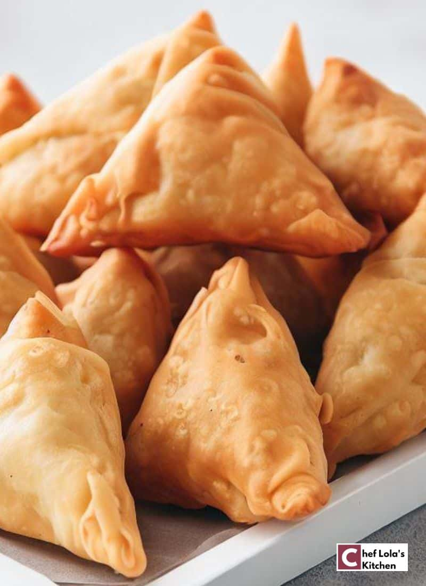

Originally made from india,It has a thin wrapper made into pocket fillet with well seasoned minced beef or minced chicken, Itf fried to crisp golden
Hard boiled egg whites stuffed with creamy, smooth yolk filling.

Pile of cheddar cheese on a hot pan, with tortilla round being added along with spoonful seasoned beef, served with skillet with lime